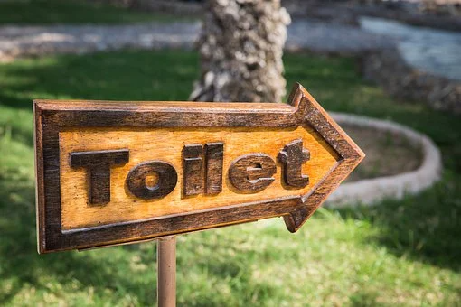
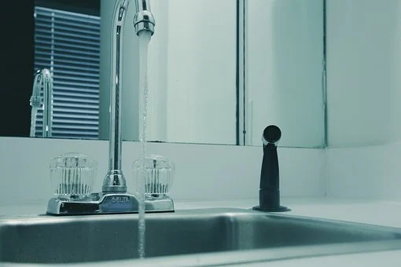
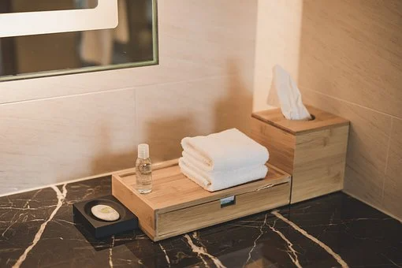
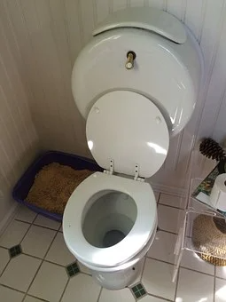
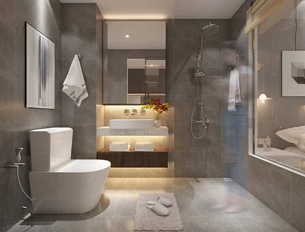

🏠 변기의 원리를 알려 주세요!
용인 변기막힘 전문 시공 후기

📋 작업 개요
- 위치: 용인
- 서비스 유형: 변기막힘, 배관막힘, 악취차단
- 작업 일시: 2022. 4. 4. 10:00
- 업체명: 하수구수사대 (010-5615-2118)
🔍 문제 상황
변기의 아래쪽을 보면
S 자 모양으로 생긴 관이
내부에 볼록하게 솟아있다는 것을
쉽게 알아차릴 수 있습니다.
요즘에는 이 관의 모양을
커버하여 만들어 놓은 변기도
다양하게 출시되고 있지만
그 모양은 여전히 유지되고 있는데요.
이러한 모양의 관을
웨어라는 이름으로 부르고 있는데
경사가 져있기 때문에

🔎 원인 분석
💡 전문가 진단: 정밀 진단 장비를 사용하여 슬러지의 고착 여부를 판명하고 타격/세척 작업을 실시했습니다.
물의 높이를 고정시켜 줄 수 있어요.
용변을 보고 난 후
변기의 물을 내리더라도
일정한 양의 물이 내려오고 난 후
남은 양을
유지할 수 있는 거죠.
변기 레버를 누르면
탱크 속에 고여 있었던 물이
일정한 양으로 배출되고
변기 물의 수위가 높아지면서
압력이 증가하게 되는데요.

🔧 작업 과정
이 압력으로 인해
용변을 본 물은 그대로
웨어를 넘어
배출되는 원리랍니다.
물이 배수관 속을 따라
흐르면서 진공 상태를 만들고
진공 상태를 없애려는 작용으로
배설물이 나가는 것이에요.
그 후에는 남은 물이
내려오면서 웨어를
넘지 않을 정도로
고이게 되며 배관 속 냄새를
차단해 주는 것입니다.
최근에는 변기가
용변을 배출할 때 사용하는
물의 양이 과도하게 많다는
지적에 따라


✅ 작업 완료
연구를 진행하고 있어요.
아마 머지않은 미래에는
우리가 사용하는 변기 모양
또한 새로운 형태와
원리를 사용하게 되지 않을까요?


⚠️ 하수구 배관 막힘 예방 및 관리 가이드
- ✅ 머리카락, 비닐, 물티슈 등 물에 분해되지 않는 이물질은 하수구 유입을 절대 금지해 주세요.
- ✅ 하수구 거름망을 씌우고 모여진 이물질은 주기적으로 쓰레기통에 바로 비워주셔야 합니다.
- ✅ 배관 노후가 심할 경우 이물질이 더 쉽게 걸리므로 주기적인 배관 세척(고압세척 등)을 권장합니다.
- ✅ 작업 후 1년 이내 재발 시 하수구수사대에서 무상 A/S 보증 서비스를 제공합니다.
💡 핵심 정리
- 확실한 장비 작업(내시경 점검 및 샤프트 스케일링)으로 원인을 뿌리 뽑습니다.
- 작업 후 1년 이내에 동일한 부위 재발 시 100% 무상 A/S 서비스를 보장합니다.
- 서울 · 경기 · 인천 전 지역에 24시간 언제든 긴급 출동할 수 있도록 항시 대기 중입니다.
❓ 자주 묻는 질문 (FAQ)
🚨 용인 변기막힘 문제로 고민이신가요?
정확한 원인 진단과 확실한 시공으로 재발 없는 해결을 약속드립니다.
24시간 긴급 출동 | 서울 · 경기 · 인천 전지역 | 1년 내 재발 시 무상 A/S